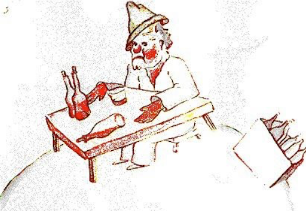
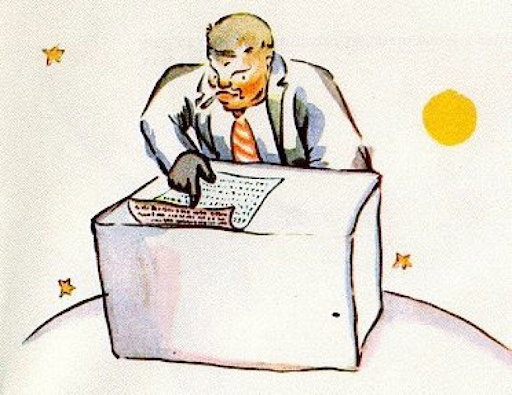
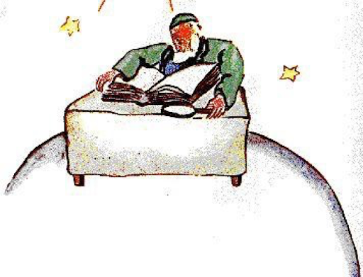

10장
어린 왕자의 별 가까이로 소행성 325호, 326호, 327호, 328호, 329호와 330호가 있었데. 그래서 이 기회에 그 별들을 방문해보기로 마음 먹고 떠난 거였지. 어린 왕자가 간 첫 번째 별엔 왕이 살고 있었데. 왕은 ‘자주빛’(옛날부터 황제를 상징하는 색이 자주색임. 자주색 옷은 아무나 입을 수 있는 옷의 색깔이 아님) 옷과 (왕이 입는) 가운을 입고서 홀로 그렇게 홀로 그러면서도 근엄한 왕좌(왕의 의자)에 앉아 있었데.
"어허! 신하가 왔구먼!" 어린 왕자를 보자, 그 왕이 소리쳤어. 어린 왕자가 혼잣말로 말했지. "나를 한 번도 본 적이 없으면서 다짜고짜 신하라니 참?" 어린 왕자는 왕을 몰랐지만 이 문제는 간단했어. 왕에겐 모두가 그의 신하였던 거야. "내가 더 잘 볼 수 있게 좀 더 가까이 오너라."라며 마지막까지 왕의 자긍심을 뽐내려는 듯 왕이 말했데. 어린 왕자는 앉을 자리를 찾아 보았지만, 별이 전부 왕의 장엄한 가운(윗옷)에 덮여 있는지라 어쩔 수 없이 그렇게 서 있기만 했데. 그래서 지루해 하품을 하게 되었지. "짐 앞에서 하품을 하다니 무엄한지고."라며 왕이 말했데. "이제 하품을 금하노라."
"어쩔 수 없는 걸요,"라며 어린 왕자가 혼란스러워서 대꾸했지. "긴 여행을 하느라 잠도 제대로 못 잤꼬요..." "그렇담,"라며 왕이 말했데. "하품을 허락하노라. 하긴 짐도 여러해 동안 남의 하품을 본 적이 없으니. 하품이 짐에게도 신기하긴해. 그럼 어디 어서! 하품을 더 해보거라. 어명(명령)이다." "잠 다 깼는데요... 이젠 할 수 없어요..."라며 얼굴을 붉히며 어린 왕자가 말했지. "음! 음!" 왕이 대답했다. "그렇담 짐...짐이 네게 하품을 이따금씩만 할 것을 명하노라..." 이 말을 하며 살짝 말까지 더듬는 걸로 봐선 왕께서도 살짝 당황하셨나 봐. 왕은 자신의 위엄이 존중받아야 된다는 생각이 강했데. 그러니 불복종을 견딜 수 없었던 거지. 그는 절대군주(왕이 곧 하늘이자 국가라는 사상)였으니까. 하지만 그 왕은 본심이 착한 사람으로 명령을 내리더라도 이치에 맞게 합당한 명령을 내리는 왕이었데. "내가 명령할 떄,"라며 왕이 말했다. "내가 어느 장군보고 바닷새로 변해라 명했는데, 그 장군이 내 말대로 안 변했다면 그건 장군의 잘못이 아닌 것이다. 내 잘못인 것이다." "앉아도 될까요?"라며 소심해진 어린 왕자가 물었지. "앉는 걸 명하노라."라며 왕이 자신의 화려한 가운을 조금 당겨주며 대답했지. 하지만 어린 왕자는 이미 놀란 상태였다. 걷혀진 가운에 드러난 그 별이 너무 작았던 게지. 대체 왕이 누굴 다스린다는 거지? "폐하,"라며 어린 왕자가 말했어. "부디 제가 질문을 하나 해도 된다고 허락해주십옵소서." "내게 질문을 허락하노라."라며 왕이 말했다.
"폐하는, 무얼 다스리시나요?" "전부다."라며 왕이 대단히 간단명료하게만 대답했어. "주로 어떤?" 왕이 사려 깊게 손짓을 해가며 자신의 별과 다른 별들을 가리켜보였어. "저 전부다요?"라며 어린 왕자가 말했어. "전부 다 말이다."라며 왕이 대꾸했데. 한 마디로 말해 그는 절대군주일 뿐만 아니라 온 우주의 왕이었던 거야. "별들도 당신께 복종하나요?" "물론이란다,"라며 왕이 말했다. "복종한단다. 암 즉시 복종하고 말고. 난 규율이 없는 걸 못 참거든." 그런 엄청난 힘이 있다면 좋으련만. 그럼 어린 왕자도 자신의 의자보고 스스로 당겨앉아지라고 명령할 수 있을 텐데, 그럼 지는 해를 하루동안에만해도, 마흔 네번, 아니 일흔 두 번, 아니 심지어 백 번, 아니 더 심지어 이백 번은 더 볼 수 있을 텐데! 자신이 떠나온 별에 대한 추억 때문에 좀 슬퍼진 어린 왕자가 왕에게 간청을 드렸데. "지는 해를 보고 싶어요... 그렇게 해주세요... 해에게 지라고 명령해주세용..." "만약 내가 장군보고 나비처럼 이 꽃에서 저 꽃으로 날아다니라 명하거나, 비극을 쓰라 하거나, 그렇지 않음 바닷새로 변하라 명하는데도, 그 장군이 그리 하지 못하면, 그건 그가 잘못한 거겠니 아님 내가 잘못한 거겠니?" "폐하 잘못이요."라며 어린 왕자는 단호히 말했데. "그렇다. 우리 서로에게 서로가 해낼 수 있는 지시만 내리자꾸나 또 그리해야 되지 않겠니."라며 왕이 말하더래다. "권위는 우선 이치에 합당해야 하니까 말이다. 네가 네 백성들보고 바다로 뛰어들라 명하면, 그들에게 폭동을 일으키란 소리지 뭐겠니 또 그리 되고 말 것이다. 내 지시는 늘 합당했기에 내가 지금까지 지시를 내릴 수 있는 권리를 지니게 된 거란다."
"그럼 저의 지는 해는 어쩌고요?" 한 번 물은 물음을 포기한는 법이 없는 어린 왕자가 앞서 자신의 질문을 상기시키며 말했지. "네 지는 해는, 음 보자... 그럼 내 지시를 따로 내리마. 하지만 내 권위가 이치에 맞으려면 우선 앞뒤 상황도 호의적이여야 하니 기다리려무나." "아이참 언제 되는데용?"라며 어린 왕자가 또 또 물었데. "에헴! 에헴!"라며 왕이 우선은 큰 달력을 살피기 시작하며 대답하더래. "에헴! 에헴! 어디 보자, 어디 보자 오늘 저녁이라면 7시 40분까지만 기다리면 된단다! 그럼 내 너에게 내 지시가 어떻게 실천되는지 보여주꾸마(보여주겠노라)." 어린 왕자는 하품을 하고 말았지. 지는 해를 못 보는 게 아쉬웠으니까. 더구나 이 별이 벌써 지루해지기 시작했으니까 말이야. "그럼 여기서 더 할 게 없겠네요."라며 어린 왕자가 왕께 말했지. 다시 떠날 준비를 하며! "가지 말거라,"라는 명령을 먼저 던진 걸 내심 반색하며(반기며) 왕이 말했지. "가지 말거라. 내 너를 장관으로 임명해주마!" "네 장관이요?" "그래... 법무부 장관 말이다!" "하지만 여긴 재판할 게 하나도 없잖아요!" "우리야 모르지만,"라며 왕이 말했다. "나는 아직 다 내 왕국을 돌아보진 못했다만. 이젠 내 나이도 있고, 대형 마차도 없고 말이다, 걷는 것도 지치고." "오! 전 벌써 다 본 걸요,"라며 어린 왕자가 별 반대쪽으로 한껏 허리를 기울여 보더니 말했지. "저 쪽에도 아무 것도 없어요..." "그럼, 네 자신을 재판하면 되지 않겠니,"라며 왕이 말했어.
이건 참 난감했어(어려웠어). 남을 판정하는 것보다 자기 자신을 판별하기란 말이야. 그럭저럭 자기 자신을 잘 판단할 수 있다치면 그건 당신이 진짜 현명한 사람이란 증거이기 때문이지. "저는,"라며 어린 왕자가 말했어. "저는 여기가 아니더라도 절 판단할 수 있어요." 더는 여기 있을 필요가 없었던 거지. "에헴! 에헴!"라며 왕이 말했다. "아무래도 이 별엔 늙은 쥐 한 마리가 사나 보다. 밤에 웬 쥐 소리가 그리도 나는지. 그러니 네가 그 늙은 쥐를 재판하려무나. 오래도록 사형 선고를 내리려면, 더구나 그 쥐의 목숨이 네 자비에 달려 있으니, 넌 매번 쥐를 방면해주어야 할 것이다. 그거면 되지 않겠니." "저는,"라며 어린 왕자가 말했어. "사형 선고를 내리기 싫은걸요, 전(저는) 그만 갈래요." "아니다."라며 왕이 말했다. 그치만 어린 왕자로선 이미 갈 준비를 다 마친 상태였기에 나이 드신 왕의 만류가 먹힐 게 아니었다. "만약 당신의 명령이 엄격히 지켜지길 바래신다면, 합당한 걸 제게 명령해주세요. 예를 들면, 제가 여길 1분 안에 떠나길 명해주신다거나 하는 거요. 그래야 저도 호의를 가지고 당신의 명령을 따를 수 있지 않겠어요..." 왕에게서 아무런 대꾸가 없었데. 어린 왕자는 우선 머뭇거렸데, 그런 다음, 한 숨을 휴우 내쉬곤, 막 출발하려는데. "내 너를 대사(외국에 파견나간느 외교관)로 임명하마."라며 왕이 서둘러 외치는 소리가 들렸다. 이로써 왕은 마지막까지 자신의 권위를 지킬 수 있었던 거지. "어른들은 참 이상해."라며 어린 왕자는 다시 여행을 떠나며 혼잣말을 했지.
11장
두 번째 별엔 허영심쟁이가 살고 있었데.
"아! 아! 내 숭배자가 도착하는군!" 어린 왕자가 보이자 먼 거리에서부터 허영심쟁이가 감탄 감탄 해대며 외쳤지. 허영심쟁이에겐 모두가 자신을 찬미(숭배)하려는 팬으로 보였으니까. "안녕하세요,"라며 어린 왕자가 말했어. "모자를 쓰셨네요." "인사하기 위해서란다,"라며 허영심쟁이가 말했어. "내가 갈채를 받을 땐 인사하기 위함이지. 애석하게도 이 길로 아무도 안 지나가서 그게 문제지만." "어, 네?" 종체 뭔 말인지 알 수가 없어 어린 왕자가 말했다. "네 두 손뼉을 마주쳐보겠니."라며 허영심쟁이가 권했다. 어린 왕자가 두 손을 마주쳤다. 그러자 허영심쟁이는 근사하게 자신의 모자를 벗어 정말 정중히도 인사해주었데. "이 분이 왕보다 더 재밌는 걸."라며 어린 왕자가 혼잣말로 말했지. 그래서 거듭 거듭 손뼉을 마주쳐주었지 뭐야. 그럴 때마다 허영심쟁는 자기 모자를 벗어 인사하고 또 하더래. 이렇게 5분 쯤 지나니 어린 왕자는 이 놀이가 무료해졌어. "그럼 그 모자를 떨어뜨리려면,"라며 어린 왕자가 물었어. "어떻게 하면 돼요?" 하지만 허영심쟁이에겐 그 말이 들리지 않았어. 허영심쟁이에겐 칭찬의 말 외엔 어떤 말도 들리지 않으니까 말이야. "넌 정말 나를 많이도 찬미하는구나?"라며 그가 어린 왕자보고 물었다. "찬미가 뭔데요?" "그건 바로 내가 이 별에서 가장 아름답고, 가장 옷 잘 입고, 가장 부자이고 가장 지적이란 뜻이란다." "그치만 이 별엔 당신 외엔 아무도 없잖아요!" "나를 기쁘게 해다오. 나를 찬미 해다오!"
"당신을 찬미해요,"라며 어린 왕자가 살짝 자신의 어깨를 으쓱해보이며 말했다. "그치만 그게 무슨 상관이라고요?" 그러면서 어린 왕자는 떠났지. "어른들은 정말 별나다니깐." 어린 왕자가 다시 여행을 떠나며 읊조렸어.
12장
다음 별엔 술꾼이 살고 있었어. 이번 방문을 짧았지만 어린 왕자의 마음에 깊은 슬픔을 안기고 말았지. "뭐 하세요?"라며 어린 왕자가 술꾼에게 말했어.
근데 그는 말없이 자기 앞에 빈 술병들이 든 박스와 술이 가득 든 병들을 쌓아두고 또 쌓아두고 있었데. "술 마시지."라며 술꾼이 말하더래. 그 말이 무척 애처로워보였데. "술을 왜 마시는 데요?"라며 어린 왕자는 물었지. "잊으려고 마신단다."라며 술꾼이 말하더래. "무얼 잊으시려고요?"라며 애처로운 마음에 어린 왕자가 물었데. "내가 부끄럽다는 걸 잊으려고 마신다."라며 고개를 푹 떨구며 술꾼이 털어놓더래. "뭐가 부끄러우신데요?"라며 어린 왕자는 그를 도와주고 싶어 또 물었어. "그야 술 마시는 게 부끄럽지!" 그러더니 술꾼은 입을 꽉 다물더래. 어린 왕자는 여간 어안이 벙벙한 게 아니었어. "정말 어른들은 너무 별나다니깐." 혼잣말을 남기며 어린 왕자는 다시 여행을 떠났지.
13장
네 번째 별엔 장사꾼이 살고 있었어. 어린 왕자가 도착할 무렵 그 사내는 고개도 들지 않은 채 일에 한 창 바빠 있었데.
"안녕하세요."라며 어린 왕자가 말했다. "담○불이 꺼져 있어요." "3 더하기 2는 5. 5 더하기 7은 12. 12 더하기 3은. 안녕. 15 더하기 9는 22. 22 더하기 6은 28. 정말 다시 세볼 세도 없다니깐. 26 더하기 5는 31. 휴! 그러니까 자그마치 5억 162만 2,731개군." "뭐가 5억 개란 말이세요?" "응? 너 아직도 거기 있었니? 5억 개란... 내가 어디까지 했지... 일이 너무 많다니깐! 가만 보자, 내가 지금 놀 때가 아니지! 2 더하기 5는..." "뭐가 5억 개냐구요?" 한 번 물으면 절대 놓는 법이 없는 어린 왕자도 거듭 물었지. 장사꾼이 고개를 들었다. "내가 지금껏 이 별에서 54년을 살아왔지만, 그 동안 지금처럼 방해 받은 적이 딱 세 번 있었다. 첫 번째는 22년 전에 웬 딱정벌레 하나가 하늘에서 떨어졌을 때야. 그게 어디서 왔을라구. 어찌나 사방으로 날아다니며 소란스럽게 굴던지 셈을 네 번이나 틀리고 말았지. 두 번짼, 11년 전에, 운동부족으로 류머티즘 관절염이 와서 고생 고생 생고생을 했을 때고. 그렇지만 난 한가로이 산책할 시간이 없었지. 난 진지하다고. 세 번짼 언젠줄 아니... 바로 지금이야! 그러니까 내 말인즉슨 5억 개란..." "억이 뭔데요?" 장사꾼은 그제야 이 사태가 잠잠해질 기미가 없다는 걸 감 잡았지. "저 하늘에 때때로 반짝이는 게 보이지, 그게 억 개란다." "파리요?" "아니, 반짝이는 작은 거 말이다." "꿀벌요?" "아니. 게으름뱅이도 웃게 만드는 저 작고 귀여운 황금빛깔 반짝이들 말이다. 난 지금 심각하다고! 장난칠 기분이 아니야." "아! 별들요?" "그래 별들 말이다."
"5억 개의 별들로 뭐하시게요?" "정확하게 하자구나. 정확히 5억 162만 2,731개란다." "그러니까 이 많은 별들로 뭐하시는데요?" "뭘 하냐고?" "네." "아무것도. 난 그저 저들을 소유하고 있을 뿐이다." "별들을 가지셨다고요?" "그래." "하지만 제가 만난 왕은..." "왕들은 소유하진 않아. 그들은 통치할 뿐이지. 이것과 그것 별개의 문제라고." "별들을 소유해서 어디다 써먹게요?" "나를 부자로 만들어주지." "어떻게 부자가 되신다는 건데요?" "누가 나타나서 별들을 사줄 때마다 말이다." "이 분도,"라며 어린 왕자가 속으로 말했어. "술꾼과 비슷하시군." 하지만 질문을 추가로 더 물었지. "별들을 어떻게 소유할 수 있는데요?" "그럼 누구 건데? 대답해보렴, 심술쟁이야, 그러니 바로 나 장사꾼 거지." "모르겠는데요. 누구건지는." "그러니까 내 거란 거란 말이다, 내가 가장 먼저 그 생각을 했으니까." "그게 다시라고요?" "그야 물론. 네가 만일 누구 소유도 아닌 다이아몬드를 발견하게 되면 그건 틀림없이 네거다. 네가 누구 소유도 아닌 토지를 발견하게 되도 그건 물론 너의 것이지. 네가 뭔가를 맨 처음 생각하게 되면 그 생각에 대한 특허를 네가 가지게 되는 거야, 너의
것이란 증거지. 내가 별들을 소유하는 것과 같은 이치란다. 누구도 저 별들을 소유할 생각은 내 이전에 해본적이 없으니 말이다." "그렇네요,"라며 어린 왕자가 말했다. "그럼 별들로 뭐하시게요?" "거야 장사를 하기 위함이지. 난 별들을 세리고 다시 세본단다,"라며 장사꾼이 말했다. "그건 어려운 일이지. 하지만 난 진지한 걸 좋아하는 사람이니까!" 어린 왕자로선 여간 만족스럽지 못한 대화가 아니었다. "제게 목도리가 생기면, 그걸로 제 목을 감싸거나 추위를 막아줄 수 있어요. 제가 꽃을 소유하면 제 꽃을 꺽거나 어딘가로 옮길 수도 있고요. 그치만 별들을 어떻게 따신다는 건가요!" "아니 무슨 뚱단지 같은 소리니, 난 그저 저 별들을 은행에 넣어둘 뿐인 거다." "그건 또 무슨 말씀이신데요?" "별들의 개수를 작은 종이에 적어둔다는 의미다. 이 종이를 서랍장에 넣고 잠근다는 거지." "애걔, 그게 다라고요?" "그게 다가 아니라, 그거면 족해!" "이 무슨 뚱딴지같은 소리지."라며 어린 왕자는 생각했어. "꼭 시를 읽는 느낌인데 진실되겐 들리지 않아." 어린 왕자는 어른들의 이 심각한 사고방식들에 대해 여간 이해에의 어려움을 느끼는 게 아니었다. "저는,"라며 어린 왕자가 다시 말했다. "꽃을 가지고 있어요, 제가 매일 물을 주는 꽃이요. 그리고 제가 매주 굴뚝 청소를 해주는 화산도 세 개나 있고요. 저는 사화산(활동하지 않는 화산)도 청소해준답니다. 잘 모르시겠지만, 제가 소유한 화산들도 다 쓰임새가 있어요, 제 꽃도 유용하고요. 그치만 저 별들이 당신에게 어떤 유용함이 있다는 건지..." 장사꾼은 입을 열었지만 이내 곧 말문이 막혀버렸어. 그래서 어린 왕자도 눈치껏 그곳도 떠나게 된 거란다.
"어른들은 정말 다들 괴상해." 여행을 다시 시작하며 어린 왕자는 속으로 생각하고 또 생각했어.
14장
다섯 번째 별은 좀 이상했어. 가장 작았기 때문이지. 가로등과 ‘불 키는 사람’이 서 있기에도 공간이 꽉 찼기 때문이지. 사실 집도 사람도 없는 별에 과연 가로등과 불 키는 사람이 무슨 소용이 있을지 어린 왕자로선 선득 납득이 되지 않았어. 그래서 어린 왕자는 혼자 말했지. "아마 이 사람도 어리석을 거야. 하지만 왕이나 허영심쟁이나 장사꾼이나 술꾼보다 덜 하겠지. 적어도 그의 일은 의미가 있으니까. 가로등에 불을 키는 건 마치 별이나 꽃에 새 생명을 주는 거와 같고, 가로등에 불을 끄는 건 꽃이나 별이 잠 들게 해주는 거와 같잖아. 아주 좋은 직업이야. 아름답기도 하고 무척 유용해보여."

그 별에 다가간 어린 왕자가 공손히 불 키는 사람에게 인사를 건넸지. "안녕하세요. 왜 방금 가로등을 끄셨나요?" "명령에 따른 거란다."라며 불 키는 사람이 대답했다. "그래 안녕하니." "명령이 무엇이었는데요?" "내 가로등을 끄란 거였지. 그럼 안녕(굿 이브닝)." 그가 가로등에 다시 불을 붙였다. "하지만 왜 방금 또 불을 켜신 건가요?" "그게 명령이었으니까."라며 불 키는 사람이 대꾸했다. "이해가 안 가요."라며 어린 왕자가 말했다. "굳이 이해할 필욘 없단다,"라며 불 키는 사람이 말했다. "그게 내 일이니 말이다. 그럼 안녕." 그러더니 그가 가로등을 껐다. 그런 다음 그가 빨간 체크무늬 손수건으로 자신의 이마를 닦았다.
여기서 고된 일을 하고 있단다. 예전엔 할만 했는데. 지금은 낮과 밤이 시도 때도 없이 바꿔서 말이다. 나도 하루의 나머지 시간엔 좀 쉬어야 하는데, 그래야 밤의 나머지 시간에 좀 자둘 수 있는데 말이다..." "그럼 명령이 바뀐 그때부터 그렇게 된 건가요?" "명령은 바뀌지 않았단다."라며 불 키는 사람이 말했다. "애석하게도! 이 별은 수년간 더 빨리 더 빨리 회전하고 있지. 명령이 바뀐 건 아니야!" "그래서요?"라며 어린 왕자가 말했다. "그래서 지금은 이 별이 1분에 한 바퀴씩 돌고 있단다, 그러니 내가 쉴 틈이 없지. 1분마다 가로등을 켰다 끄야 하니까!" "웃겨요! 여기선 낮이 1분이라니요!" "웃길 일은 아니란다,"라며 불 키는 사람이 말했어. "우리가 대화를 나눈 후 벌써 한 달이 흘렀으니." "한 달요?" "그래. 30분. 30일 말이다! 그럼 안녕(저녁인사)." 그러더니 그가 가로등 불을 껐다. 어린 왕자는 그를 바라보았다. 어린 왕자는 지시사항에 맞추어 자신의 일을 성실히하고 있는 그가 사랑스러웠다. 그러자 예전에 한 번 자신의 의자를 끌어당기면서까지해서 지는 해를 마냥 바라보던 자기 자신의 모습이 떠올랐다. 그는 자신의 친구를 도와주고 싶었다. "저요... 어떻게 하면 쉬실 수 있는지 알거 같아요..." "난 항상 쉬고 싶단다."라며 불 키는 사람이 말했어. “한 사람이 성실하고 게으를 수만 있다면.” 어린 왕자가 말을 이어갔다. "이 별은 아저씨가 세 걸음이면 다 돌만큼 너무도 작아요. 그러니 천천히 걸어가시면 해가 항상 떠 있을 거예요. 그럼 걸으면서 쉬실 수 있어요... 그렇게만 되면 아저씨가 원하는 만큼 낮이 계속되는 거에요."
"내게 크게 도움은 안 되는구나."라며 불 키는 사람이 말했다. "난 잠을 좀 더 자고 싶거든." "애석해라."라며 어린 왕자가 말했다. "애석하지."라며 불 키는 사람이 말했다. "안녕." 그러더니 그가 가로등의 불을 껐다. "지금껏 여행에서 내가 만났던 사람들은,"라며 어린 왕자가 말했다. "그를 무시할 테지. 왕이나, 허영심쟁이, 술꾼, 장사꾼들은 말이야. 하지만 이 사람은 내게 전혀 우스꽝스럽지 않아. 자기 일에 성실한 사람이니까." 어린 왕자는 그와 헤어지는 게 못내 아쉬워 한숨 지으며 혼잣말을 다시 했어. "내 친구로 삼고 싶은 유일한 분인데. 그치만 그의 별은 정말 너무도 작아. 두 사람이 있을 공간도 없어..." 어린 왕자는 무려 24시간 만에 지는 해를 1440번이나 볼 수 있는 이 축복받은 별을 떠날 수 밖에 없는 현실이 너무도 애석했어. 하지만 이별을 인정 않을 수 밖에 없단 생각이 들어 어린 왕자도 이내 떠나고 말았지.
15장
여섯 번째 별은 열 배는 큰 별이었어. 거기엔 엄청 큰 책을 쓰고 있는 노신사 한 분이 거주하고 계셨지.
"어이! 탐험가 한 분이 오셨군!"라며 어린 왕자를 보자 그가 소리쳤어. 어린 왕자는 책상 위 한 쪽에 앉으며 가뿐 숨을 몰아셨지. 벌써 엄청 먼 여행을 해왔기 때문이야! "그래 어디서 오는 길이니?"라며 노신사가 말했어. "이 큰 책은 다 뭐예요?"라며 어린 왕자가 물었어. "여기서 뭘 하고 계신 건가요?" "난 지리학자란다."라며 노신사가 말했어. "지리학자가 뭔데요?" "바다와, 강과, 도시와, 산과 사막들이 어디 있는지를 아는 과학자란다." "무척 재미난데요,"라며 어린 왕자가 말했어. "마침내 직업 다운 직업을 찾았나 봐!" 어린 왕자가 힐끔 힐끔 지리학자가 사는 별을 둘러보았지. 정말이지 이토록 (풍경이) 경이로운 별은 본 적이 없었어. "정말 아름다운 별이네요. 여긴 바다가 어디 있나요?" "모른단다."라며 지리학자가 말했어. "앗!" 이 부분에서 어린 왕자는 실망하고 말았지. "그럼 산은요?" "그것도 모른단다."라며 지리학자가 말했어. "그럼 도시나 강들 아님 사막은요?" "그것도 역시 난 모른단다."라며 지리학자가 말했어. "아니 당신은 지리학자라면서요!" "물론이지,"라며 그 지리학자가 말했어. "하지만 난 탐헌가는 아니란다. 내겐 탐험가들이 절대적으로 부족하지. 도시, 강, 산, 바다, 해양과 사막을 찾는 건 지리학자가 하는 일이 아니란다. 지리학자란 한가로이 떠돌 수 없을만치 중요한 직업이기 때문이지. 그래서 잠시도 사무실을 비울 수 없단다. 하지만 탐험가들의 방문은 언제든 환영한다. 우린 그들을 조사하고 그들의 기억을 기록으로 남겨두거든. 그들의 기억에서 흥미로운 게 있음, 우선 우리 지리학자들은 그들 탐험가들의 덕성부터 살피지." "그건 또 왜요?"
"거짓말을 하는 탐험가들은 우리 지리학 책에 대참사를 일으키기 때문이란다. 또한 횡여 탐험가가 술을 잔뜩 마시기라고 했다면 더욱 말이다." "아니 왜요?"라며 어린 왕자가 말했어. "술은 사물을 두 개로 보이게 하거든. 그럼 지리학자는 멋도 모르고 멀쩡히 잘 있는 산 하나를 두 개나 있다고 기록하게 되지." "하긴 그런 사람을 알긴 하죠."라며 어린 왕자가 말했어, “그는 실은 나쁜 탐험가가 되려 했거든요.” "가능하다면, 그런 이유로 탐험가들의 덕성이 착하면 좋단다, 그럼 다음이면 우린 좀 더 그들의 발견에 대해 조사해보지." "그럼 된 건가요?" "아니. 아직은 아니란다. 탐험가들에게 증거를 제시해달라 말하지. 예를 들면 그들이 큰 산을 발견했다고 하면 그 증거로 큰 돌을 가져와달라는 식으로 말이다." 지리학자가 갑자기 자세를 고쳐잡았어. "그래 넌 멀리서 왔다고! 너도 탐험가겠구나! 그래 네 별에 대해 설명해다오!" 지리학자는 자신의 공책을 펼치더니 연필을 깎았어. 그들은 일단 연필로 탐험가들의 말을 적다, 탐험가들이 증거를 확실히 제시하면 그때 가서 잉크로 그걸 다시 적는다는 거야. "그래서?"라며 지리학자가 물었어. "오! 집이요(오! 제 별을 물어신 거에요?),"라며 어린 왕자가 말했다. "그렇게 재미난 곳은 아닌데. 아주 작거든요. 화산이 세 개. 두 개는 활화산(활동 중인 화산)이고요, 사화산(꺼진 화산)도 하나 있어요. 하지만 어찌 될진 몰라요." "모른다라."라며 지리학자가 말했어. "제겐 또한 꽃도 한 송이 있어요." "우린 꽃은 취급하지 않는데..."라며 지리학자가 말했다. "아니 왜요! 엄청 예쁜데요!"
"꽃은 순간 살다 가잖니." "순간 살다니, 그게 무슨 말인데요?" "지리학은,"라며 지리학자가 말했어. "온갖 학문들 중에서도 가장 진지한 학문이란다. 결코 폼으로 기술하진(적지는) 않아. 산의 위치는 변하지 않잖니 그럼 우린 기록한단다. 바다의 물도 비워지지 않잖니 그러니 우리가 기록해두지. 우린 영원한 것들을 다룬단다." "하지만 사화산(꺼진 화산)도 언제든 다시 분출할 수 있어요."라며 어린 왕자가 끼어들며 말했어. "근데 순간 살다가... 그게 무슨 말인데요?" "화산이 활화산(활동 화산)이든 사화산(꺼진 화산)이든 우리에겐 매한가지란다."라며 지리학자가 말했어. "중요한 건 그 산의 존재란다. 쉽게 변하지 않잖니." "하지만 순간 살다가가 무슨 말이냐고요?" 한번 질문을 했다하면 쉽게 물러나지 않는 어린 왕자가 거듭 거급 물었어. "그건 누군가에게 죽음이 임박했다는 의미란다." "그럼 제 꽃도 죽음이 임박한 건가요?" "물론이지." "제 꽃이 죽는다니,"라며 어린 왕자가 생각했어. "그 앤 이 세상에서 자길 지켜내기엔 가시 네(4) 개가 다인데! 그런 그녈 혼자 두고 오다니!" 거듭 후회감이 몰려왔어. 그의 첫 번째 울컥함이었지. 그치만 용기를 다시 냈어. "어디 제가 가볼 만한 곳 추천해주실 수 있나요?"라며 어린 왕자가 물었지. "지구에 대한,"라며 지리학자가 대답했어. "평판이 무척 좋더구나..." 어린 왕자는 자신의 꽃을 추억하며 길을 떠났다.
단원명
전체 문제 수: 문제